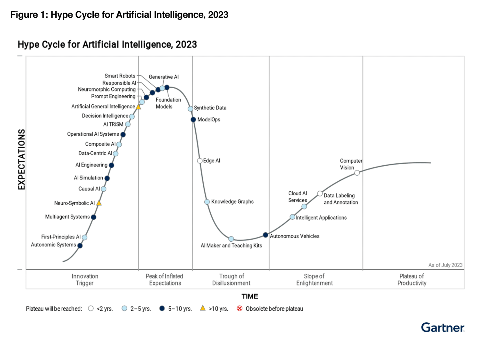
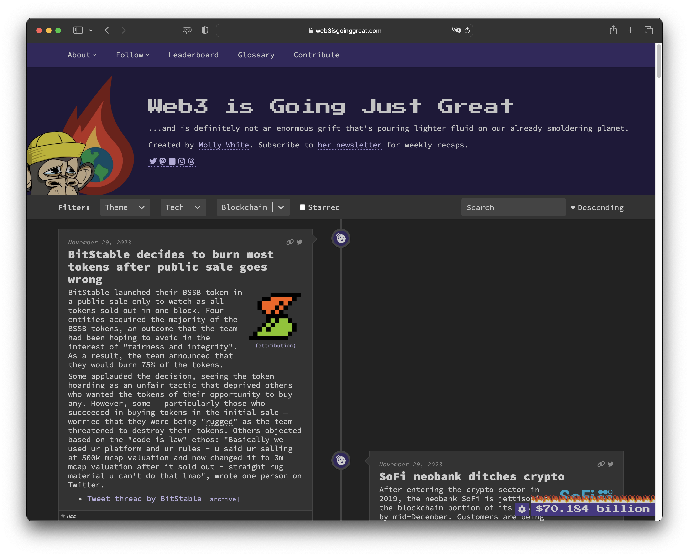
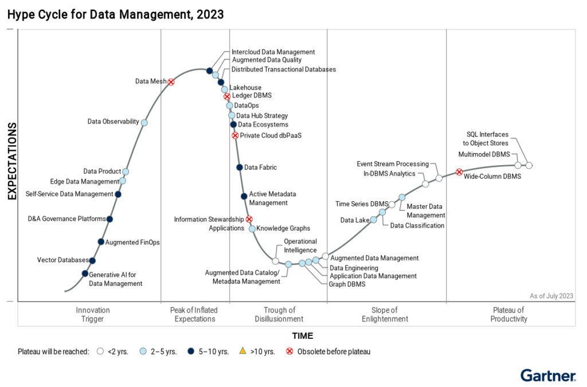
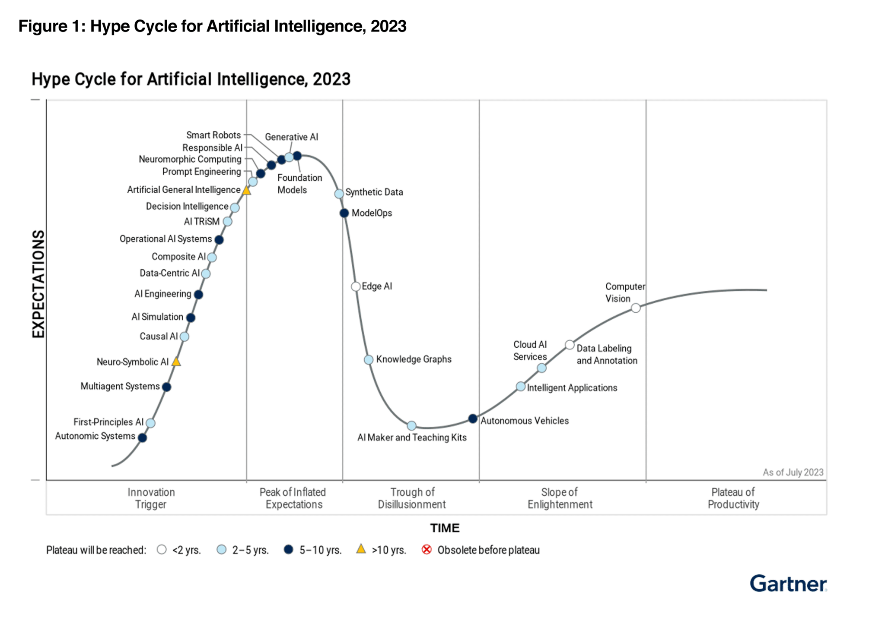
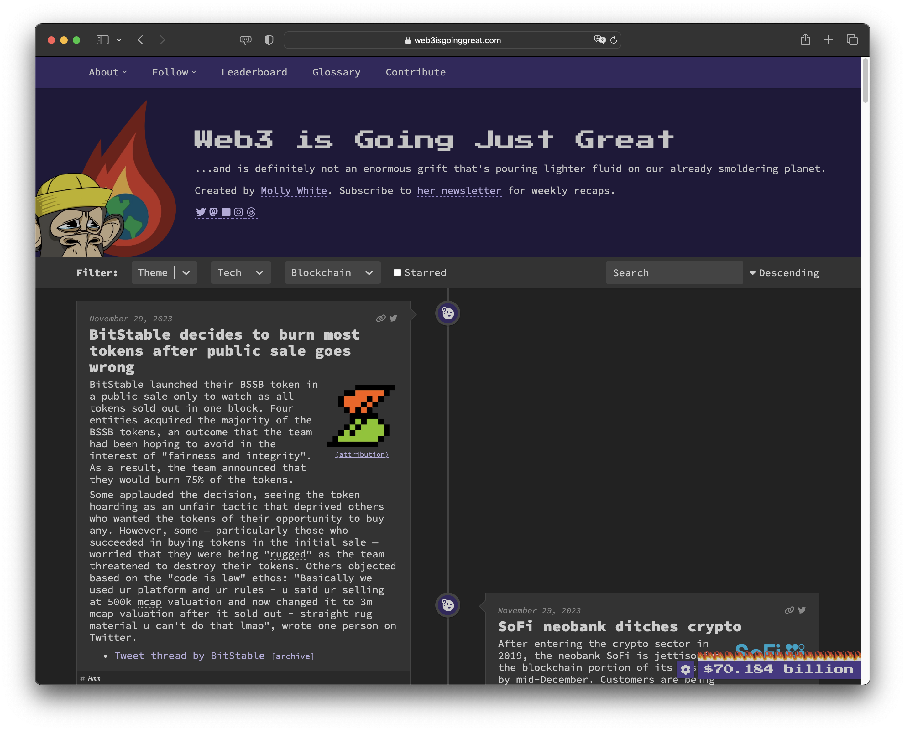
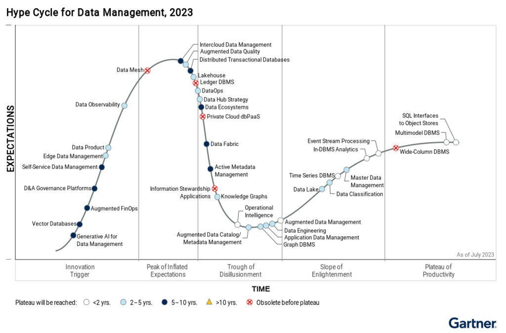

Laboratoire🧪
M51 – HEIG-VD - COMEM
⛄️ Marc Friederich
Disclaimer
Bonjour 👋
Marc Friederich ☃️
🥰 web
La veille technologique ?


Pourquoi un laboratoire ?
La technologie ?
- Outils
- Valeur
- Dangereux
- Bonne ?
- Maîtrise
Motivation personnelle
Comprendre ma relation à mon métier
💾 1998 > 2001 > 2003
Comem+ 34
2005
Evtek Finland
2006
Antistatique
2008
Participation aux conférences
Organisation de conférences
🧪 L'objectif du lab
- Importance de la veille
- Prendre du recule sur votre profession
- Mécanismes de la gestion des connaissances
- Trouver votre système
Comment
- 6 étapes
- Travaux pratiques
- Livrable web
- Travail solo
- Présentation
Livrable attendu |
Blog traitant de votre domaine de veille4 articles (résumé des informations dénichées), 1 article (Explication du système d'écoute mis en place) et 1 article (expérimentation réalisée) Une page "À propos" qui explique votre domaine, ce qui vous lie à ce domaine (Ikigai) et les taxonomies ainsi que l'explication du choix du SSG |
90% – contenu |
✅ Le domaine est en relation avec votre Ikigai, ainsi que les taxonomies sont expliqués sur une page À propos. ✅ Les 6 articles sont en relation avec le domaine (dont 1 sur une expérimentation et 1 avec le système et la liste des sources d'écoute). ✅ Le contenu des articles cite la/les sources et explique en quoi ils sont intéressants pour vous et votre domaine et à quel moment cela vous sera utile. |
10% – technique, la forme |
✅ Le site est généré avec le SSG de votre choix ✅ Le thème est bien choisi (il correspond au domaine) ✅ Le site est hébergé sur github et se génére via Github Actions |
Questions à cette étape ?
La veille technologique
Organiser sa formation continue, se tenir au courant des prochaines tendances et anticiper les grands changements dans votre domaine de prédilection.
Les étapes de la veille
- Le domaine
- Système d'écoute
- Workflow de tri
- Classement
- L'épreuve du temps
- Exploitation
Le domaine
Choix du domaine
Spécialistes vs Généralistes
Le cercle de l'ennui du fun
🚧
Exercice pratique nº1
Tracer votre Ikigai.
Ce pourqui vous vous levez le matin (en semaine)
45 min, solo
C'est un exercice personnel
Quel élément de la formation COMEM vous passionne le plus ?
| technique | expertise |
| management | communication |
🗺 Fiche de domaine
| Domaine | Dénomination, ensemble de technologies, industrie, ... |
| Mots-clés | Lexique du domaine |
| Sous-domaines | Division en sous-thèmes et domaines directement apparentés |
| Pourquoi ? | Raison de mon intérêt, lien avec mon (futur) métier, adéquation avec mon ikigai |
Exemple : Design d'interaction web
| Domaine | Mise en page et design d'interaction web : principalement autour des technologies HTML/CSS et JS |
| Mots-clés | Layouting, animation, interactivité, UX, accessibilité, responsive, print layout, performances, progressive enhancement, graceful degradation |
| Sous-domaines | Mise en page, interactivité, design systems(styleguide), maintenance, collaboration design/dev |
| Pourquoi ? | Intersection entre design et technologie |
🚧
Exercice pratique nº2
Définir votre domaine de veille, Thème favoris, votre passion
30 min, solo
| technique | expertise |
| management | communication |
- Le domaine
- Système d'écoute
- Workflow de tri
- Classement
- L'épreuve du temps
- Exploitation
Système d'écoute
Online/Offline😷
Canaux 🔮
- Réseaux sociaux
- Blogs / magazines
- Podcasts
- Newsletters
- Événements (meetup, conférence)
- Agrégateurs (alertes)
Émetteurs 📣
- Personnalité du domaine
- Influenceurs
- Organisations professionnelles
- Organismes de standardisation
- Entreprises leader dans le domaine
Astuces 🎮
Conférences → speakers


🚧
Exercice pratique nº3
90 min, solo
Identifier pour votre domaine : les réseaux, les acteurs, les événements qui informent
Perdez-vous un peu dans la toile 🕵️♀️
Notez les URLs, les façons de s'abonner (newsletter, RSS, follow on twitter, youtube, instagram...)
Rendu : Commencez le 1er article qui liste les émetteurs·trices et sources de votre veille (en expliquant pourquoi vous les avez choisis)
Welcome back
Vous vous souvenez pourquoi on est là ?
🧪 L'objectif du lab
- Importance de la veille
- Prendre du recule sur votre profession
- Mécanismes de la gestion des connaissances
- Trouver votre système
Comment
- 6 étapes
- Travaux pratiques
- Livrable web
- Travail solo
- Présentation
- Le domaine
- Système d'écoute
- Workflow de tri
- Classement
- L'épreuve du temps
- Exploitation
🚧
Exercice pratique nº3
Identifier pour votre domaine : les réseaux, les acteurs, les événements qui informent
Perdez-vous un peu dans la toile 🕵️♀️
Notez les URLs, les façons de s'abonner (newsletter, RSS, follow on twitter, youtube, instagram...)
Rendu : Commencez le 1er article qui liste les émetteurs·trices et sources de votre veille (en expliquant pourquoi vous les avez choisis)
Livrable attendu |
Blog traitant de votre domaine de veille4 articles (résumé des informations dénichées), 1 article (Explication du système d'écoute mis en place) et 1 article (expérimentation réalisée) Une page "À propos" qui explique votre domaine, ce qui vous lie à ce domaine (Ikigai) et les taxonomies ainsi que l'explication du choix du SSG |
90% – contenu |
✅ Le domaine est en relation avec votre Ikigai, ainsi que les taxonomies sont expliqués sur une page À propos. ✅ Les 6 articles sont en relation avec le domaine (dont 1 sur une expérimentation et 1 avec le système et la liste des sources d'écoute). ✅ Le contenu des articles cite la/les sources et explique en quoi ils sont intéressants pour vous et votre domaine et à quel moment cela vous sera utile. |
10% – technique, la forme |
✅ Le site est généré avec le SSG de votre choix ✅ Le thème est bien choisi (il correspond au domaine) ✅ Le site est hébergé sur github et se génére via Github Actions |
La bulle ⚗️ et l'écho 🙉
Filter bubble : Algorithmes de sélection des informations (médias sociaux, Agrégateurs, Recherche)
Echo chamber : Distorsion de la réalité due à une surexposition à un seul point de vue
- Prise de conscience
- Se méfier des recommandations
- Diversifier les canaux
- IRL check
🛠 outils
Classification suivant la source
- Média (images, vidéo, textes, sons)
- Taille (long format, brèves)
- Périodicité (real time, weekly digest)
- Technologies (Web, Apps, Mails)
Choix des outils 🛠
- Multi-canaux
- Article vs Digest
- Facilité d'exportation du système
- Ouverture
Recap 📡
- Étape clé de la veille
- Attention à la bulle
- Ouverture des outils
- Maintenance des listes et outils
🚧
Exercice pratique nº4
Sélectionner consciencieusement 15 articles/éléments/medias
Lisez/écoutez/visionnez les attentivement
Prenez le meilleur, préparez 3 slides pour le présenter à la classe
🎙
Compréhension de git
git ≠ github.com
github.com/zufrieden/slides-veille-tech-heig-2024
Prénom Nom
mon domaine ...
Mon sujet
Ma source
Pourquoi ?
Slide 1
Slide 2
Slide 3
Slide 3
data-background-image="https://xyz/monimage.png"data-background-size="contain"data-background-size="cover"Exemple
Friederich Marc
m34
HTML/CSS
L'utilisation d'une vidéo HDR pour surprendre
Source : Datagif
Pourquoi : C'est la première fois que je vois cette technique
Utilisation d'une vidéo en HDR
Placée derrière un PNG avec des "trous"
C'est parti
Correia da Rocha Luca
m51-1
UX/UI design
What’s next on Figma’s mind?
Source : Medium
Pourquoi : Figma font plein de changement et est le principale outils de travail des UX/UI Designer
Figma se prépare à révolutionner les systèmes de conception
La rendre plus intuitive et efficace pour les équipes.
Des indices
UI3, Figma Slides, Figma Al et Code Connect
2025 ?
Ferreira Tiago
m51-1
Responsable en communication
L’IA dans la communication: l’experte Afke Schouten explique comment les entreprises peuvent utiliser l’IA
Economiesuisse.ch
L'IA est un enjeux majeur aujourd'hui et savoir comment on pourrait l'utiliser dans notre communication pourrait être un atout ?
Quelle utilité ?
Automatisation des tâches : génération de texte (rapports, réseaux sociaux), chatbots, commandes vocales
Analyse de données : reconnaissance de la langue, analyse de données clients, personnalisation des contenus
Optimisation des processus : gains d’efficacité, tendances et modèles pour affiner la stratégie de communication
Comment utiliser l'IA en entreprise ?
Planification stratégique : identifier les besoins et fixer des objectifs avant d’adopter l’IA
Projets pilotes : tester l’efficacité de l’IA dans des domaines spécifiques
Formation : importance de former les employés à bien utiliser des outils comme ChatGPT
Le futur de l'IA dans la communication
Développement continu : intégration croissante de l'IA dans les réseaux sociaux, réalité augmentée, et virtuelle
IA avancée : possibilité de futures IA capables de tâches complexes, mais le facteur humain reste crucial pour une communication efficace
Ferreira Oliveira Andreia Micaela
m51-1
Directrice artistique digital
Campagne publicitaire
Ma source
Façon originale et fun de présenter un sujet qui l'es moins
Campagne publicitaire Welcome to the jungle
- Faire de la recherche d'emploi un processus enthousiasmant
- Encourager les interactions authentiques entre candidats et employeurs
- directeurs artistiques digitaux essentiels pour concevoir des campagnes visuelles percutantes
Frossard Robin
m51-1
Coach Basket 🏀
Comment briser une zone 2-3
https://www.instagram.com/reel/DAVwZAWumJQ/
Important d'avoir un registre varié d'attaque contre une zone ?
Le but d'une zone 2-3
L'important pour battre une zone 2-3
Les timings
La précision
La lecture du jeu
joelgaillard
m51-1
Développement web
Développeurs et IA
Source: Blog du modérateur
Sujet en constante évolution
Utilisation et perception de l'IA par les développeurs
- 61,8 % des développeurs utilisent l'IA
- 13,8 % prévoient de l'adopter
- 72 % ont une opinion favorable
- 45 % jugent l'IA insuffisante pour des tâches complexes
Défis éthiques et techniques liés à l'IA
- Désinformation (79,4 %)
- Erreurs dans les sources (64,7 %)
- Fiabilité des résultats (66,2 %)
- Bases de données incomplètes (63,3 %)
Kohli Laurence
m51-1
Management
Analysis paralysis
plan.io
Pourquoi ?
J'ai souvent des difficultés à prendre de grandes décisions
Beaucoup de burn-out liés à la pression dans les chef.fe.s de projet
85% of us suffer from decision-making distress
Les solutions
- Mettre un délai pour répondre
- Autoriser les échecs dans l'équipe
- Utiliser des frameworks de décision (RACI, S.P.A.D.E, or BCM)
- Prendre les grandes décisions à plusieurs
- Récolter beaucoup de données avant de décider
- Après avoir pris une décision, s'y tenir et y croire
Martin Jérémy
m51-1
mon domaine : UX / front-dev / entreprenariat
Icon Usability
Nielsen Norman Group
Pourquoi ? Génération emoji, choix souvent instinctif des icônes
Icon Recognizability
Icon Interpretation
Find a physical store
Nordstrom mobile appFind a physical store
Sephora mobile appView and search vendors
Ramp websiteView shopping categories (menu)
DSW mobile appPasche Steve
m51-1
mon domaine c'est l'UX / UI
Ui / UX
Procreator
Mais pourquoi j'ai choisi ce site ?
14 Outils essentiels de l'UX/UI de 2025
L'UX/UI évolue avec l'IA, l'AR et la VR. Ces technologies redéfinissent la conception en offrant des expériences plus immersives et personnalisées.
Impact de l'IA dans le design
En 2025, 70% des designers utiliseront des outils basés sur l'IA pour automatiser, personnaliser et accélérer la création d'interfaces.
Pourquoi adopter ces outils?
Ces innovations permettent de concevoir plus efficacement, avec des expériences centrées sur l'utilisateur et adaptées aux besoins changeants du marché.
elodiePe
m51-1
UX/UI design
Zero-Based Design (ZBD)
medium.com
J'en avais jamais entendu parlé et j'ai trouvé intéressant.
Méthodologie
- à partir de 0
- ≠ influence
- ≠ itérations
- ≠ hypothèses
- => On améliore pas un produit existant mais on repense le problème avec des outils modernes et les besoins des utilisateurs
Points clés
- Elimination des contraintes héritées
- Solutions créatives sans être limité par le passé
- Approche centrée sur les besoins actuels des utilisateurs
Quand utiliser ?
- lorsque le système est trop complexe
- lorsque les besoins ont changé
- lorsqu'on veut innover à long terme
Tschaler Lucas
m51-1
Design d'interface
Une interface sur un écran rond (l'écran de la nouvelle mini cooper)
BastiUI - Le problème avec les écrans ronds
Rare de voir des interfaces sur grand écran rond.
Uldry Antoine
m51-1
Future Fullstack Developer
Boost your dev's career
Hackernoon
Level up your knowledges and prepare yourself for the professionnal world.
Plateforme pour apprendre
Projets pratiques
Préparation aux entretiens techniques
Opportunités d'emploi et de stage
developer-roadmap
Wermeille Odin
m51-1
mon domaine : Chef de projet
Conseils de gestion de projet
Source : Kwili
Pourquoi : Établir quels éléments sont le plus plaisants pour moi
Classement des tâches issues de ses conseils
Impliquer son équipe
Apprendre de ses erreurs
Définir un cadre de travail clair
Organisation des tâches
Suivre l'avancement
Planifiaction
Allocation des ressources
Zurflüh Jérémie
m51-1
Full stack developer
Améliorer les PWA avec des API
smashingmagazine
Présentation d'API moins connues
Les PWA ont besoin de plusieurs API pour imiter les applications natives.
Quatre API JavaScript sous-utilisées peuvent aider à combler ce fossé.
- API d'orientation de l'écran
- API d'orientation de l'appareil
- API de vibration
- API de sélection des contacts
Utilisation
Orientation de l'écran
- portrait/paysage
- ➡️ Adapter UI/UX
Orientation de l'appareil
- Capteurs gyroscopiques pour détecter la rotation de l'appareil
- ➡️ jeux mobiles pour le contrôle de l'inclinaison de l'appareil
Vibration
- Déclenche des vibrations
- ➡️ Notifications, alertes
Sélection des contacts
- Récupère les contacts de l'appareil
- ➡️ Résaux sociaux
Problème
Faible prise en charge par les navigateurs : Ces API ne sont pas largement prises en charge.
Merci pour votre participation
Aerny Nicolas
mon domaine ...
Mon sujet
Ma source
Pourquoi ?
Ahmetovic Adem
mon domaine ...
Mon sujet
Ma source
Pourquoi ?
Cheneval Michaël
mon domaine ...
Mon sujet
Ma source
Pourquoi ?
Demont Lucie
mon domaine ...
Mon sujet
Ma source
Pourquoi ?
Devals Morgane
mon domaine ...
Mon sujet
Ma source
Pourquoi ?
Donzel Emile
mon domaine ...
Mon sujet
Ma source
Pourquoi ?
Emeri Leo
mon domaine ...
Mon sujet
Ma source
Pourquoi ?
Gilliand Sami
mon domaine ...
Mon sujet
Ma source
Pourquoi ?
Ibrahim Mohamed Hanae
mon domaine ...
Mon sujet
Ma source
Pourquoi ?
Kasper Lohann
mon domaine ...
Mon sujet
Ma source
Pourquoi ?
Künzi Clément
mon domaine ...
Mon sujet
Ma source
Pourquoi ?
Macaluso Léa
mon domaine ...
Mon sujet
Ma source
Pourquoi ?
Maître Zoé
mon domaine ...
Mon sujet
Ma source
Pourquoi ?
Monnerat Loïc
Marketing dans la finance
Crypto.com Receives Wells Notice From SEC
Article
Pourquoi: Car comme je veux travailler dans la communication pour des entreprises de finance, cet article type "news" confirme la position de la SEC qui joue un rôle important dans la finance mondiale.
Contenu de l'article
L'article nous informe que, récemment, la Securities and Exchange Commission des États-Unis a envoyé une Wells Notice à Crypto.com (une lettre qui dit que la SEC révoit d'intenter une action en justice contre eux).
Cela confirme la position "anti-crypto" de la SEC et démontre une fois de plus que le combat pour avoir une adoption de la cryptomonnaie par les institutions va être longue.
Meme de fin
Montanari Tristan
mon domaine ...
Mon sujet
Ma source
Pourquoi ?
Peretti Maxime
mon domaine ...
Mon sujet
Ma source
Pourquoi ?
Pinto Ribeiro Micael
mon domaine ...
Mon sujet
Ma source
Pourquoi ?
Stader Nathan
mon domaine ...
Mon sujet
Ma source
Pourquoi ?
Teklezgi Yonatan
mon domaine ...
Mon sujet
Ma source
Pourquoi ?
Winterhalter Léo
mon domaine ...
Mon sujet
Ma source
Pourquoi ?
Welcome 🤗
back back back
Qu'avez-vous appris
de plus important ?
Au menu 👨🏻🍳
- Théorie
- Coder
- Déployer
- Articles
Questions ?
- Le domaine
- Système d'écoute
- Workflow de tri
- Classement
- L'épreuve du temps
- Exploitation
Workflow de tri
Pourquoi 🎯
et quand ⏳ ?
Utilité et temporalité de l'information
⭐️
🎛
Processus
- Premier tri -> Outil de lecture
- Lecture -> Sélection (long terme, références)
- Classé pour toujours
- Le domaine
- Système d'écoute
- Workflow de tri
- Classement
- L'épreuve du temps
- Exploitation
Classement
Category / Tags
Exclusif / Ouvert
Définition de la taxonomie : Exemple CSS
| Mots-clés | Layouting, animation, interactivity, UX, accessibility, responsive, print layout, performances, progressive enhancement, graceful degradation, typography, inspiration, visual-experience | |
| Sous-domaines | Mise en page, interactivité, design systems(styleguide), maintenance, collaboration design/dev | |
| Catégories |
|
|
Site statique
Lab
Livrable attendu |
Blog traitant de votre domaine de veille4 articles (résumé des informations dénichées), 1 article (Explication du système d'écoute mis en place) et 1 article (expérimentation réalisée) Une page "À propos" qui explique votre domaine, ce qui vous lie à ce domaine (Ikigai) et les taxonomies ainsi que l'explication du choix du SSG |
90% – contenu |
✅ Le domaine est en relation avec votre Ikigai, ainsi que les taxonomies sont expliqués sur une page À propos. ✅ Les 6 articles sont en relation avec le domaine (dont 1 sur une expérimentation et 1 avec le système et la liste des sources d'écoute). ✅ Le contenu des articles cite la/les sources et explique en quoi ils sont intéressants pour vous et votre domaine et à quel moment cela vous sera utile. |
10% – technique, la forme |
✅ Le site est static (par exemple, généré avec le SSG de votre choix) ✅ Le thème est bien choisi (il correspond au domaine) ✅ Le site est hébergé sur github (et se génére via Github Actions) |
- Sécurité
- Performances
- Resilience
- Simplicité
monsite/
├── archetypes/
│ └── default.md
├── assets/
├── content/
├── data/
├── layouts/
├── public/
├── static/
├── themes/
└── config.toml
➜ zufrieden git:(source) hugo
Start building sites …
| EN
-------------------+-------
Pages | 2869
Paginator pages | 26
Non-page files | 90
Static files | 69
Processed images | 0
Aliases | 1
Sitemaps | 1
Cleaned | 0
Total in 860 ms ➜ zufrieden git:(source) hugo serve
Start building sites …
Web Server is available at http://localhost:1313/ (bind address 127.0.0.1)
Press Ctrl+C to stopCohérence avec votre domaine
Comment choisir un outil/logiciel/framework/CMS/theme ?
- Communauté
- Dépendances
- Design
- Quantité de code
- Derniers commit
🚧
Exercice pratique nº5
- Choisir un SSG
- Créer un repository sur github : labveilletech
-
Installer votre outil SSG, créer le site labveilletech
MonSSG new site labveilletech - Bien choisir un thème et l'installer
- Créer votre page A propos
Hosting GitHub
Documentation complète pages.github.com
Actions Hugo
github.com/peaceiris/actions-hugo
.github/workflows/gh-pages.yml
name: github pages
on:
push:
branches:
- main # Set a branch to deploy
...
...
jobs:
deploy:
runs-on: ubuntu-18.04
steps:
- uses: actions/checkout@v2
with:
submodules: true
fetch-depth: 0
- name: Setup Hugo
uses: peaceiris/actions-hugo@v2
with:
hugo-version: 'latest'
...
...
- name: Build
run: hugo --minify
- name: Deploy
uses: peaceiris/actions-gh-pages@v3
with:
github_token: ${{ secrets.GITHUB_TOKEN }}
publish_dir: ./public%
Welcome back4/5
Vive la neige 🌨️
Au menu 👨🏻🍳
- Théorie
- Articles
Livrable attendu |
Blog traitant de votre domaine de veille4 articles (résumé des informations dénichées), 1 article (Explication du système d'écoute mis en place) et 1 article (expérimentation réalisée) Une page "À propos" qui explique votre domaine, ce qui vous lie à ce domaine (Ikigai) et les taxonomies ainsi que l'explication du choix du SSG |
90% – contenu |
✅ Le domaine est en relation avec votre Ikigai, ainsi que les taxonomies sont expliqués sur une page À propos. ✅ Les 6 articles sont en relation avec le domaine (dont 1 sur une expérimentation et 1 avec le système et la liste des sources d'écoute). ✅ Le contenu des articles cite la/les sources et explique en quoi ils sont intéressants pour vous et votre domaine et à quel moment cela vous sera utile. |
10% – technique, la forme |
✅ Le site est généré avec le SSG de votre choix ✅ Le thème est bien choisi (il correspond au domaine) ✅ Le site est hébergé sur github et se génére via Github Actions |
-
Site Lab Veille Tech
- Accueil
- Articles
- Article 0 - Mon système de veille, mes abonnements, ma routine
- Article 1
- Article 2
- Article 3
- Article 4
- Article 5 - Basé sur une expérimentation (Sera traité au prochain cours)
- À propos (Ikigai, domaine, à propos de moi, comment j'ai fait ce site)
- Le domaine
- Système d'écoute
- Workflow de tri
- Classement
- L'épreuve du temps
- Exploitation
L'épreuve du temps
1984
Des courbes à retenir 📈📉
jQuery
$('body').append($('<p>'))
Vanilla
document.body.appendChild(document.createElement('p'))


 





⌛️ A quel moment ça s'arrête ?


1970 |
UNIX 🔑 |
1974 |
TCP/IP 🔌 |
1991 |
HTTP 📋 |
1961 |
EMAIL 💌 |
1867 |
KEYBOARD ⌨️ |
1964 |
FLATSCREEN 🖥 |
1976 |
INTEL 8086 🔳 |
The idea that something might work fine the way it is has no place in tech culture.
~ Maciej Ceglowski
Evolution vs progress
Prédire et qualifier l'utilité des informations
Welcome back
Dernier cours 😱
Au menu 👨🏻🍳
- Théorie
- Déployer
- Articles
- Le domaine
- Système d'écoute
- Workflow de tri
- Classement
- L'épreuve du temps
- Exploitation
Exploitation planifiée
Expérimentation
-
Prototype
-
Vrais projets
-
Lessons apprises
🧰
- Sujet et objectifs de l'expérience
- Résultat attendu, résultat obtenu
- Point d'apprentissage
- Idées/exemples d'application de la méthode
🧑🚒
🕵️♀️
🚧
Exercice pratique nº6
Jusqu'à la fin du cours
- Création d'un prototype pour expérimenter
- Rédaction de l'article "lessons apprises"
Livrable attendu |
Blog traitant de votre domaine de veille4 articles (résumé des informations dénichées), 1 article (Explication du système d'écoute mis en place) et 1 article (expérimentation réalisée) Une page "À propos" qui explique votre domaine, ce qui vous lie à ce domaine (Ikigai) et les taxonomies ainsi que l'explication du choix du SSG |
90% – contenu |
✅ Le domaine est en relation avec votre Ikigai, ainsi que les taxonomies sont expliqués sur une page À propos. ✅ Les 6 articles sont en relation avec le domaine (dont 1 sur une expérimentation et 1 avec le système et la liste des sources d'écoute). ✅ Le contenu des articles cite la/les sources et explique en quoi ils sont intéressants pour vous et votre domaine et à quel moment cela vous sera utile. |
10% – technique, la forme |
✅ Le site est généré avec le SSG de votre choix ✅ Le thème est bien choisi (il correspond au domaine) ✅ Le site est hébergé sur github et se génére via Github Actions |
🧘♀️
Avoir confiance en votre système
Deploy 🚀
Socle technologique
- Hébergement web
- OS
- Webserver
- Génération du site HTML
- OS
- Hugo App
- Stockage de la source de contenu
- Git
Github pages
git branch gh-pages
GitHub Actions
Automatiser
- Une nouvelle version
- Installer les outils
- Récupérer le code
- Générer le site
- Publier
🚧
librable attendu
27 janvier 2024 à 23h59
6 articles (4 articles résumant un contenu + 1 article d'expérimentation + 1 article sur votre système de veille)
1 page à propos
Site statique, auto-déployé sur une Github Pages
URL de votre site + URL du repository github à envoyer via Teams
🧪 Objectif atteint ?
- Importance de la veille
- Prendre du recule sur votre profession
- Mécanismes de la gestion des connaissances
- Trouver votre système
Veille technologique
- Le domaine
- Système d'écoute
- Workflow de tri
- Classement
- L'épreuve du temps
- Exploitation
Vos questions maintenant ou plus tard zufrieden.io